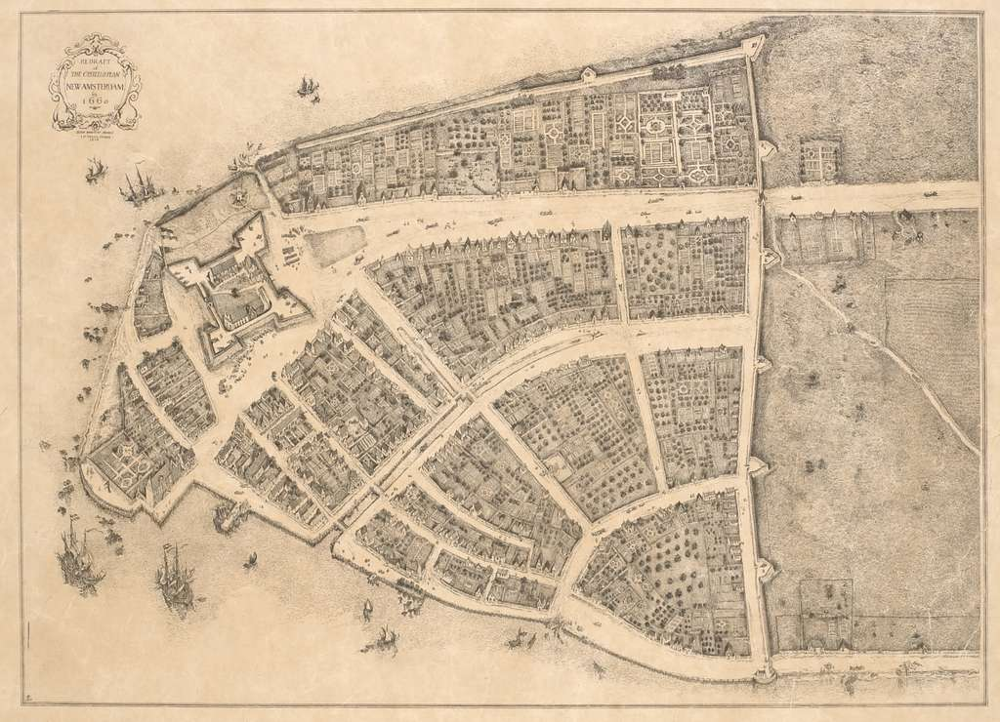
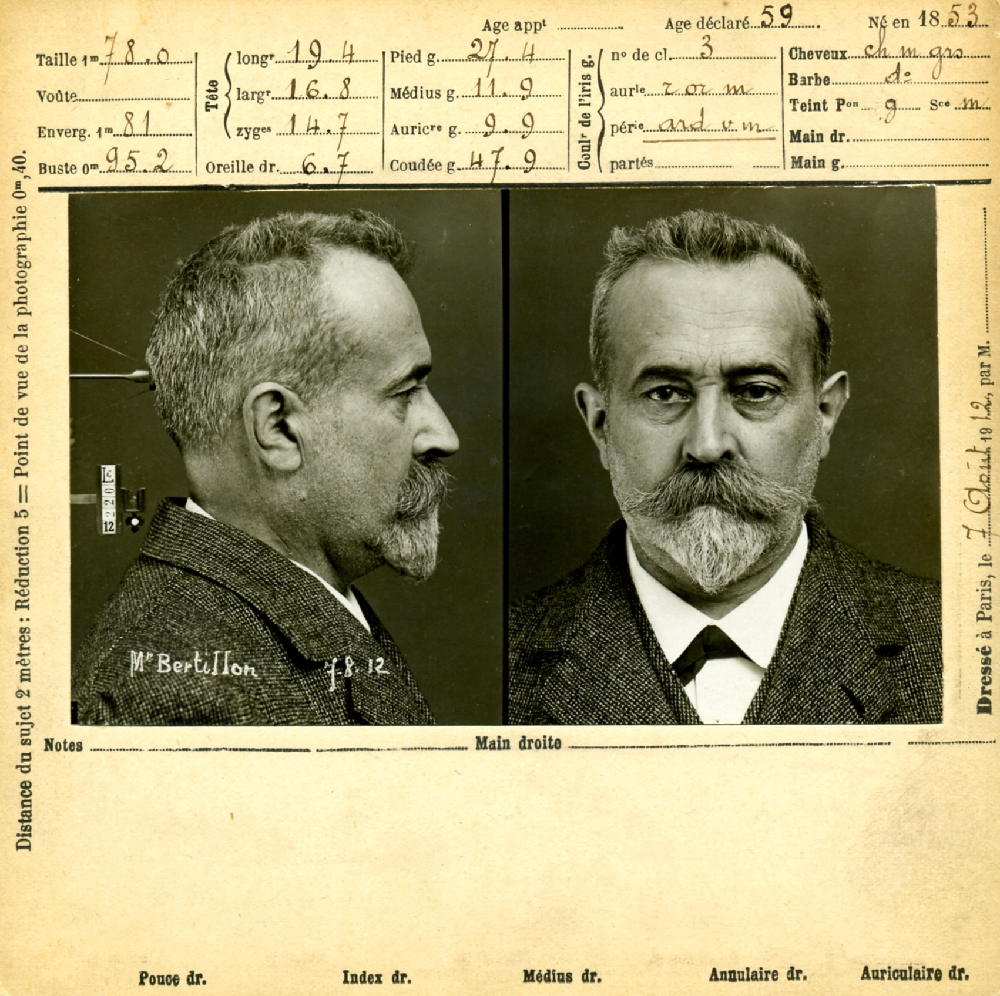
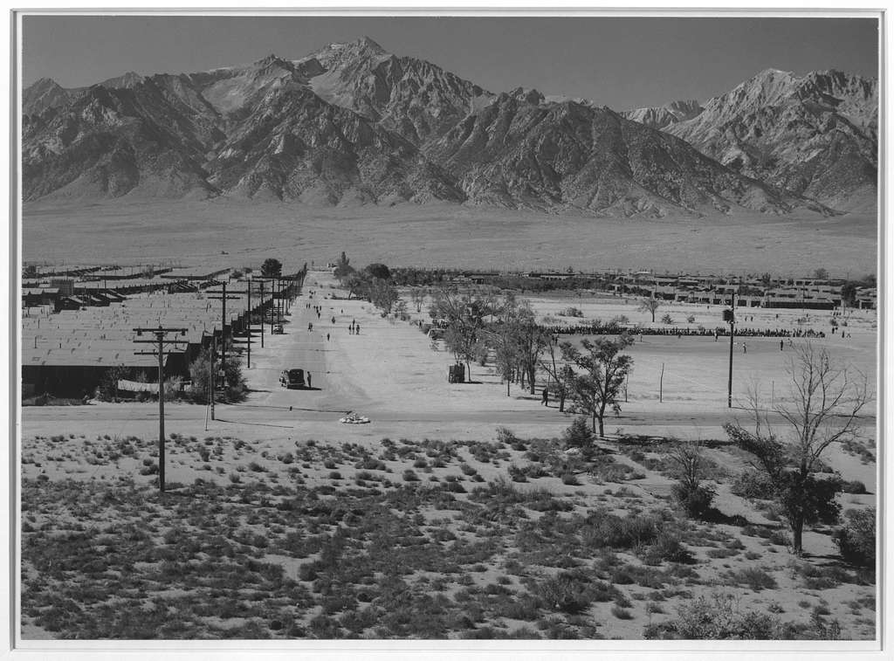
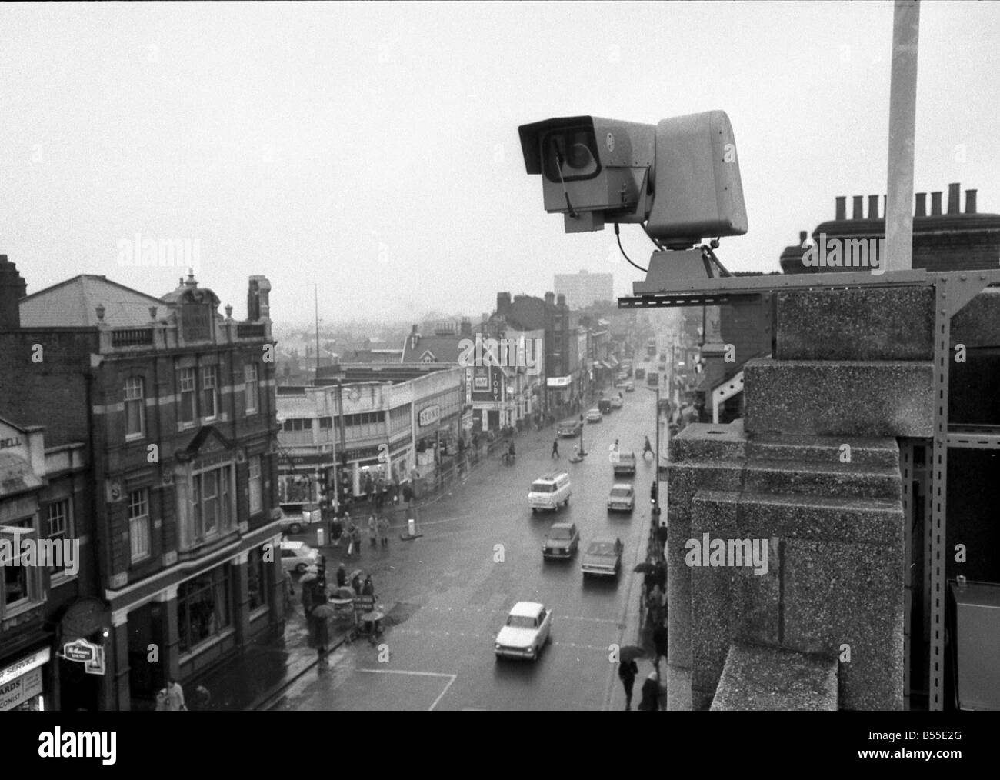
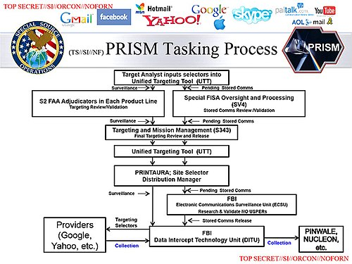
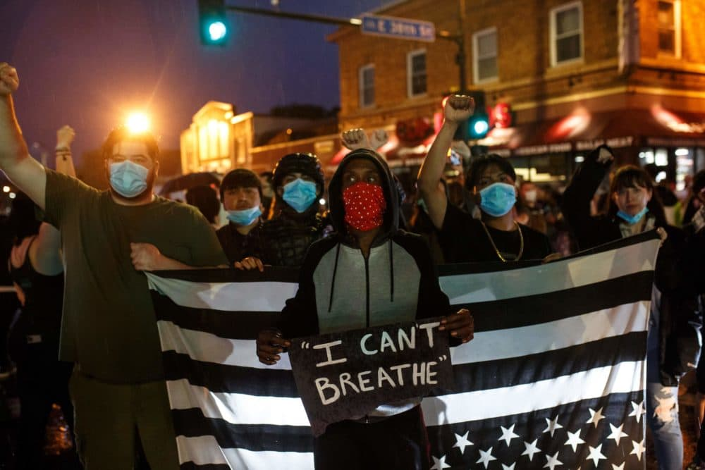

Wing 001 · Extraction
Extraction
or leave me as you found me.
I am whole.
I am one.
I am here.
I am not to be claimed.
Jeovane Slater-Taylor
Key Surveillance Technologies · 1713, Present · Hover each date
1713

1660 map of New Amsterdam, the city that passed the lantern laws
1791

Willey Reveley's plan of Bentham's Panopticon prison, 1791
1882

A Bertillon anthropometric measurement session, c.1890s
1942

Manzanar War Relocation Center, 120,000 people tracked and removed
1956
FBI COINTELPRO: systematic surveillance of civil rights organizations
1961

First CCTV cameras installed by London Metropolitan Police, 1961
2001
NSA Headquarters, PATRIOT Act authorized mass surveillance post-9/11
2007

The first iPhone, location tracking normalized as convenience
2013

Snowden's leaked NSA PRISM slide, mass digital surveillance confirmed
2019
Clearview AI scraped 3 billion photos for facial recognition, 2019
2020

BLM protests surveilled by drones, facial recognition, stingrays, 2020
← Drag or scroll · Hover each date for context →
Curatorial Statement
Surveillance is not a technology applied to bodies. It is a technology produced by the cultural logics that decided which bodies needed watching in the first place. These four texts prove it across four centuries, four populations, and four distinct forms of watching that share a single architecture.
What Gets Watched · Simone Browne, Dark Matters
Think about the last time you stood in front of an automatic sink and it didn't turn on. You wave your hands. You reposition. You try again. The sensor doesn't see you. That experience carries real weight. There is an exhaustion that comes with existing in spaces not designed with you in mind, where even the most basic interactions require extra effort. That added labor is not accidental. It is the product of a design process that never included you.
This is the distinction at the heart of Simone Browne's Dark Matters: being watched is not the same as being seen. Black people and people of color want to be seen, recognized, accounted for, designed for. What they receive instead is surveillance. The sink that doesn't register your hands and the TSA agent who pulls you aside are two expressions of the same failure. One refuses to see you. The other cannot stop watching you.
Browne traces this back to the lantern laws of 18th century New York, which required enslaved people to carry candles in the streets after dark so the white gaze could always locate them. Visibility was mandated exposure, not protection. That logic did not end with slavery. It was inherited by every surveillance technology that followed, biometrics, facial recognition, airport security screening, systems that present themselves as neutral while carrying the same original premise.
"The same body that receives hypervisible, invasive treatment at a TSA checkpoint is simultaneously invisible to facial recognition software trained on prototypically white faces. Neither side of that line is actually safe."
Browne gives us two concepts to hold this. Racializing surveillance names what happens when surveillance practices don't simply observe racial categories but actively produce and reinforce them. Dark sousveillance names the resistance: the freedom practices that targeted Black people developed to push back, forged passes, coded songs, misdirection. The archive of slavery is not historical background to a theory of surveillance. It is the theory.
Simone Browne · CUNY Digital Praxis Seminar · December 2013
Dark Sousveillance: Race, Surveillance and Resistance
A 45-minute lecture developing the concepts of racializing surveillance and dark sousveillance, tracing surveillance from 18th-century lantern laws through biometric technology, and naming the freedom practices enslaved people developed to resist the systems watching them. Hosted at the Graduate Center, CUNY.
▶ Watch on YouTubeWhat Gets Hidden · Alexander Monea, The Digital Closet
Monea's central distinction is one that matters significantly: the internet did not merely reflect a homophobic culture, it actively became one. Heteronormativity has been encoded as technical infrastructure, embedded into the training data that teaches algorithms what "sexual" means, the keyword taxonomies that determine what gets surfaced, the cultural assumptions of Silicon Valley coders, and the content moderation playbooks handed to offshore workers given seconds to adjudicate community standards.
The result is what Monea calls the "digital closet", a term he frames not as metaphor but as mechanism. To participate in digital public life increasingly requires LGBTQ+ individuals to bracket their sexual identities, not because any single policy mandates it, but because the cumulative logic of the system makes visibility costly in ways that are precise, swift, and largely undetectable to those it does not target.
"The internet did not stumble into straightness. It was built that way, incrementally, by people who could not see what they were encoding because it looked to them like nothing at all. The defaults that harm are the ones that feel like neutrality to those who set them."
The mechanism operates through a double movement of visibility: LGBTQ+ identities are rendered hypervisible as sexual threat, tripping filters trained on heteronormative assumptions, while being simultaneously erased as legitimate participants in digital public life through deprioritization, demonetization, and deplatforming. FOSTA-SESTA in 2017, framed as protecting trafficking victims, accelerated platform censorship in ways that landed hardest on LGBTQ+ communities while leaving major heteroporn producers largely intact.
Interactive · The Digital Closet in Action
Type a queer-related term. Then try a neutral term. Compare what the algorithm returns.
Visible as Resource, Invisible as Person · Felicity Amaya Schaeffer, Unsettled Borders
Remote Video Surveillance System · US–Mexico Borderlands
The Nativision Pipeline
The tower stands on Tohono O'odham Nation territory. The sensors it uses to track movement draw on pattern-recognition techniques extracted from Apache scouts by the US military. The knowledge was abstracted, automated, and redeployed to survey the land it came from. The garden was burned. What remains is the shadow of what was taken.
Schaeffer's central argument is that the militarized surveillance apparatus at the US-Mexico border cannot be understood without centering its settler colonial foundations. The border was never a neutral line. It is a technology of occupation. Settler surveillance names the state's automated seeing that empties land of Native presence even as it scans for Native threat. Nativision is the visual and sensory knowledge of the land that Apache scouts possessed, knowledge the US military extracted, abstracted, and converted into its own arsenal, erasing the source in the process.
"You are visible as a resource and invisible as a person, which is somehow worse than either condition alone. The state sees your knowledge but not your humanity. It sees the what but not the why. And that selective seeing is what makes extraction possible."
The counter-logic Schaeffer offers is sacredscience, an Indigenous relational knowledge system that understands land not as property to be mapped but as a living ancestor to be guided by. You cannot extract from sacredscience without destroying it, because the knowledge only works inside the web of relations it emerged from. To abstract it is to kill it. What the military gained from Nativision was a shadow of what it took.
US–Mexico Borderlands · Surveillance InfrastructureRVSS towers concentrated on Tohono O'odham Nation territory, with drone corridors covering the same land whose Indigenous knowledge informed the military's tracking techniques.
The Archive as Verdict · Jules Gill-Peterson, Histories of the Transgender Child
If Browne shows surveillance as racial infrastructure, Schaeffer as colonial extraction, and Monea as encoded heteronormativity, Gill-Peterson shows surveillance as medical governance, the use of clinical observation to produce, contain, and adjudicate gender nonconformity in children throughout the 20th century.
Gill-Peterson's archival recovery demonstrates that medicine did not discover the trans child. It produced one, through the accumulation of case files, diagnostic categories, and institutional protocols designed to identify and correct gender variance before it could become identity. The medical record was never a neutral document. It was a technology of assessment and a vehicle for enforcing gender normativity on bodies too young to contest being categorized.
Pediatric Endocrinology Division · [Redacted] · 20th Century Archive
Hover or click redacted fields to reveal. Gill-Peterson recovers thousands of documents like this one, records that simultaneously created and pathologized the category of "the trans child." The archive watched. The archive judged. The bodies catalogued knew that long before the scholars arrived to read the files.
"The bodies most surveilled were also the people whose accounts of that surveillance were systematically dismissed as not counting as evidence. The same logic governs who gets watched and who gets believed."
Browne's methodological choice to treat slave narratives, coded spirituals, and popular culture as co-equal theoretical sources is the epistemological move my dissertation depends on. If those artifacts count as evidence, then cultural practices count as data. Her concept of racializing surveillance, where surveillance doesn't just observe race but actively produces it, is the template for Black Code's central claim: cultural practices don't simply reflect expertise hierarchies, they constitute them. Monea makes the identical structural argument about heteronormativity: the internet didn't reflect straightness, it became straight. That move, from reflection to constitution, is the core of what I'm arguing culture does to technical knowledge.